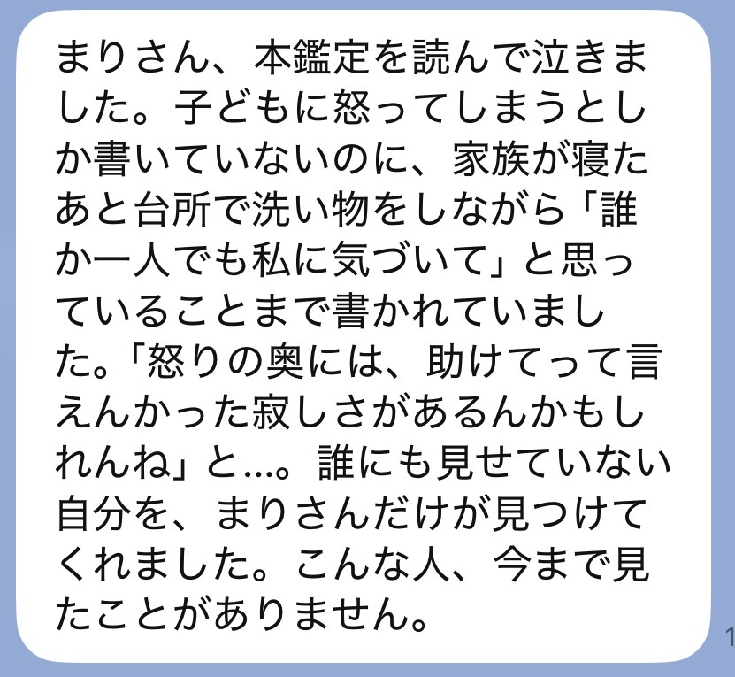
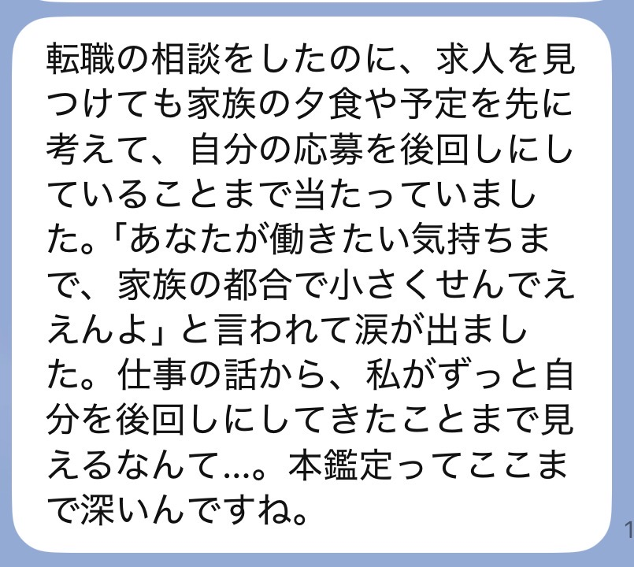
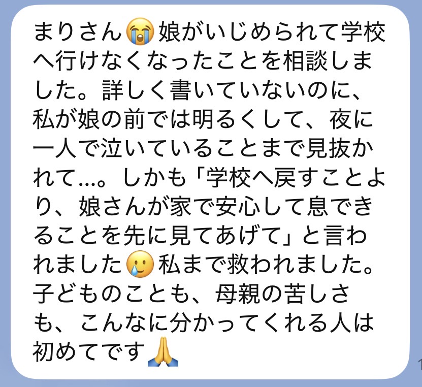
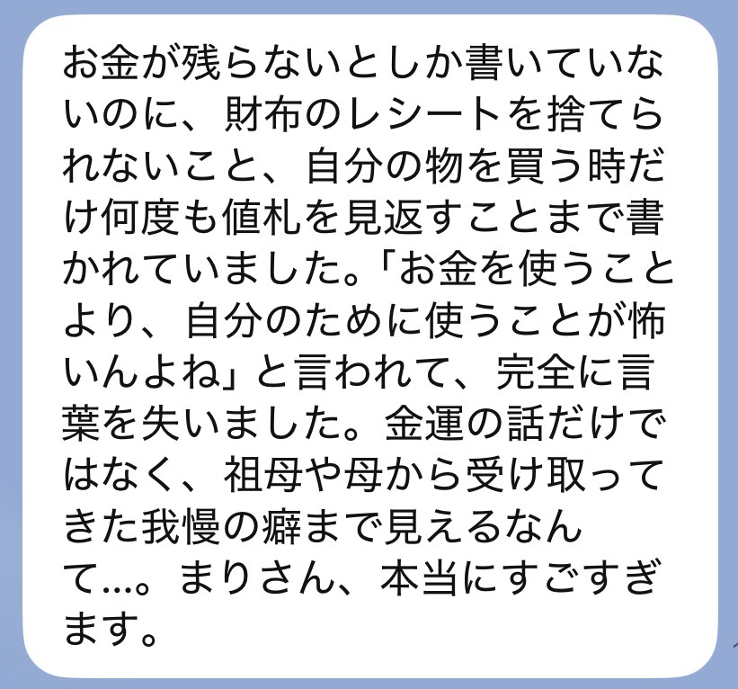

運命転換の本鑑定
あの鑑定で
視えたんは、
まだ半分なんよ
無料鑑定を受け取った方へ
SCROLL
あの無料鑑定、書いたんはわたしなんよ。
送ってくれた言葉を一つずつ読んで、
財布や台所の話から匂ってきたもんを、そのまま書いた。
読みよる途中で、どこかで手が止まらんかった？
「なんで分かるん」って、ちょっとゾッとした。
「あ、それじゃ」って、認めとうないのに認めた。
ほいで少しだけ、泣きそうになった。
手が止まった場所は、
あなたがずっと
一人で我慢しとった場所。
ゾッとした場所は、
お金と気持ちの流れが
詰まっとる場所なんよ。
「怖いけど、分かる」と思ったところ。
そこはもう、流れが戻り始めとる証拠よ。
先に言うとくね。
わたしは「ほら当たったじゃろ」が言いたいんじゃない。
怖いこと言うて、言うこと聞かせたいんでもない。
わたしが届けたいんは、あなたを責めずに、流れを戻す本当のことなんよ。

10,000人以上鑑定してきて、
頑張っとる人ほど、みんな同じこと言うんよ。
「わたしの管理が下手じゃけぇ」
「わたしが我慢すればええ」
「自分に使うんは、もったいない」
お金に嫌われとる人なんて、おらん。
受け取る場所が、ちょっと詰まっとるだけなんよ。
あなたは何も悪うない。もう十分、頑張っとる。
無料鑑定で伝えたんは、今どこが詰まっとるか。そこまでよ。
それだけでも、胸が軽うなった人は多い。
でもね、正直に言うね。
「軽うなったのに、なんでまた戻るん」
そう思った日、あったじゃろ。
当たっとった。
胸が軽うなった。
ちょっと泣いた。
そこで終わったら、三日後、また同じレシートを財布に溜めて、同じため息をついとる。
詰まりを見つけただけで、詰まる癖はまだ変わっとらんけぇね。
無料鑑定は、
「ここが詰まっとるよ」と教えるもん。
本鑑定は、
ほどき方と、二度と詰まらん
受け取り方を渡すもんなんよ。
「またお金使って、何も変わらんかったらどうしよう」
うん、その気持ちは正しいよ。
お金払ってまで視てもらうんは、ちょっと怖いもんね。

それね、弱いからじゃないんよ。
何回も期待して、何回も自分を責めてきたけぇなんよ。
急かさんよ。
ただ、せっかく見つかった「詰まっとる場所」を、
また毎日の中に埋めてほしゅうないだけ。
どっちを選んでも、
一人ずつ、ちゃんと視るけぇね。
違うんは、どこまで深くほどくかなんよ。
今の流れ、詰まっとる場所、近い未来。
動く時期と待つ時期、何から整えたらええか。
まず今のしんどさを、軽くしたい人へ。
運命転換の章を受け取る限定料金 4,980円今起きとることだけじゃのうて、なんであなたが受け取れんのかを、家系と魂の深いところから視るよ。
同じところで何回もつまずいとる自覚がある人は、こっちの方がすっきり整理できる流れが出とるよ。
運命転換の本鑑定を受け取る限定料金 9,980円鑑定は、一人ずつ
視て、書いとる。
じゃけぇ、お受けできる数に
限りがあるんよ。
今の状況を、そのままLINEに送ってね。
どっちが合うか、わたしが返すけぇ。

お名前（決済者名）、選んだ鑑定名、購入画面のスクショをLINEに送ってね。ここで一回、わたしが確認するよ。
ここが一番大事なところ。
今いちばんしんどい瞬間。認めとうなかったこと。夜にふっと出てくる気持ち。
上手に書かんでええよ。思いついたまま送ってね。
もろうた言葉を一つずつ受け取って、財布や台所から匂ってくるもんを読むよ。
ここに時間をかけたいけぇ、二〜三日もらうね。
読み終わったあとも置いとける長さで書くよ。何回でも読み返してね。
届いたLINEを、そのまま載せとるよ。




今、生活がしんどうて、このお金を出すために何かを削らんといけん人。
今回は、見送ってね。
暮らしを削ってまで受けるもんじゃないけぇ。
無料鑑定で伝えたことを、何回でも読み返して。あれは本当のことよ。
状況が変わった時に、また来てくれたらええ。
その時、わたしはここにおるけぇね。

正直に言うと、わたし自身がそうだったんよ。
家族のためのもんは買えるのに、自分のための小さな買い物には罪悪感が出る。
褒められても「いえいえ」で押し返す。
お金がないんじゃのうて、「わたしが受け取ったらいけん」と思い込んどった。
財布のレシートを抜いて、ありがとうって声をかけた夜、急に涙が出てね。
お金に困っとったんじゃない。自分をずっと雑に扱っとったんよ。
じゃけぇわたしの鑑定は、当てるより、ほどく。
あなたを責めんために、本当のことを言うとる。
無料鑑定でも手は抜いとらん。
ほいで、そこで視えたもんの奥が、まだ残っとるんよ。